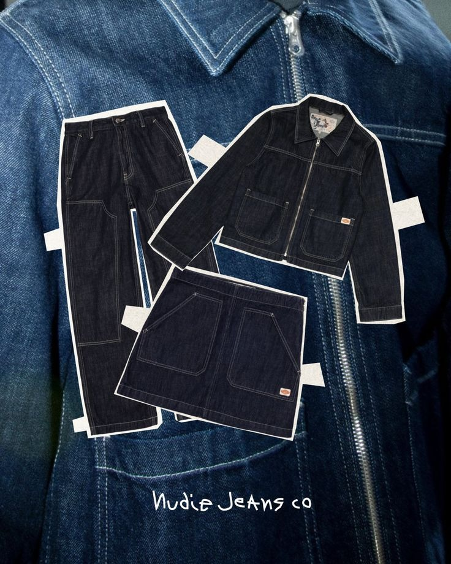
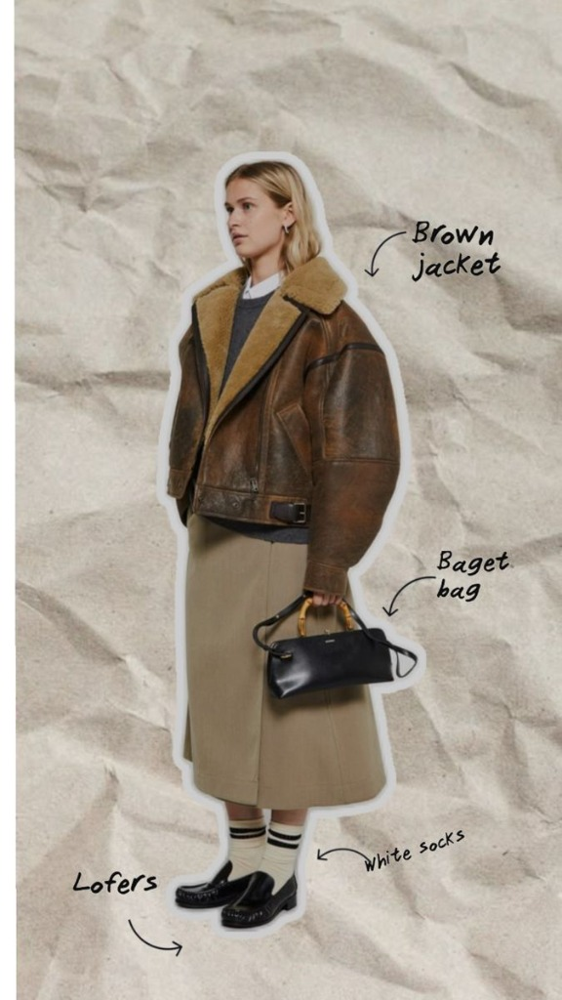
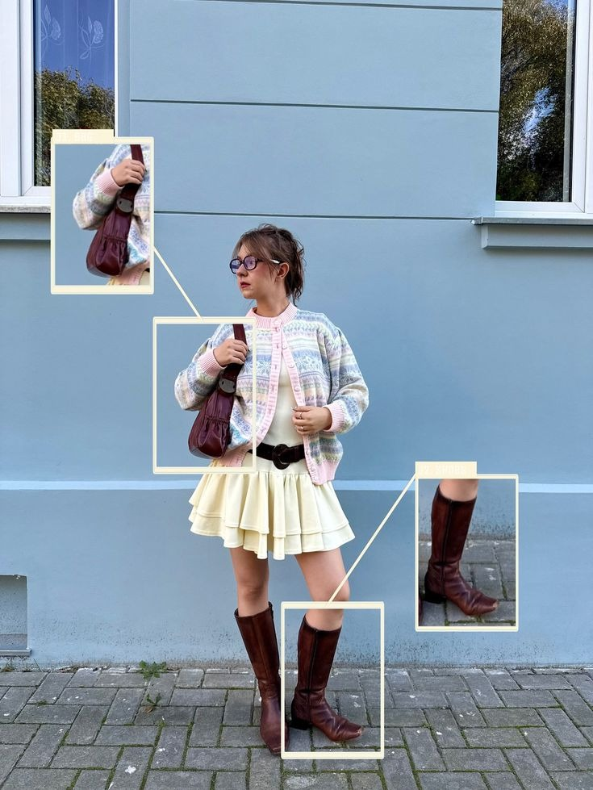
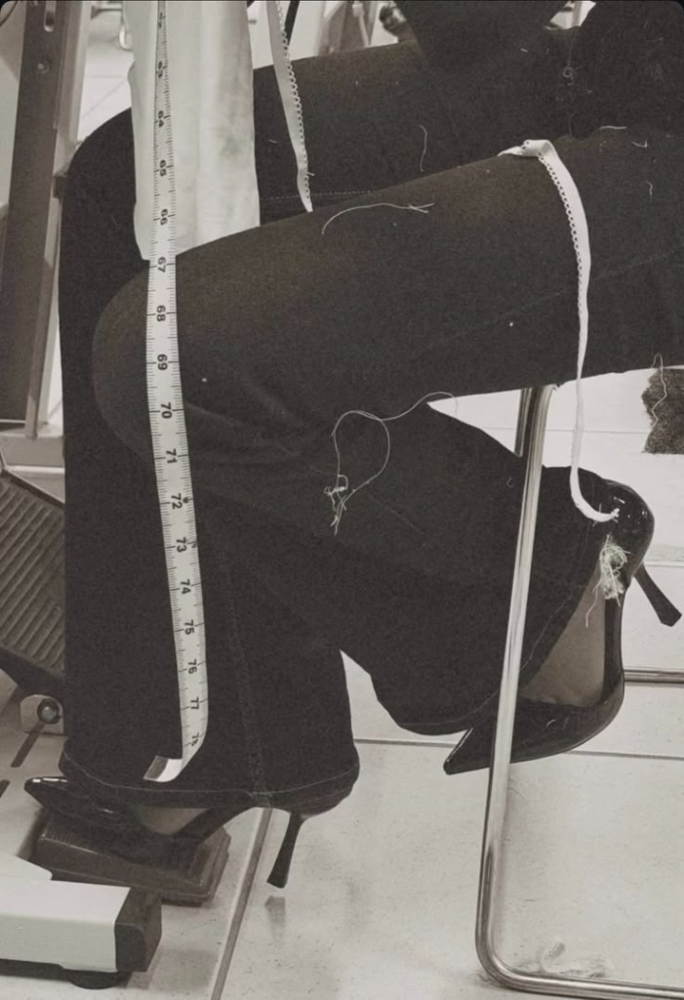

Ator 01
Doador
Pessoas e indústrias com tecidos que não usam mais. Em vez de descartar, cadastram seus materiais na plataforma e dão a eles um novo destino — transformando excesso em oportunidade.
Quero doarSão Paulo · Moda Circular
Conectamos quem tem tecido de sobra com quem transforma retalho em peça única. Uma cadeia onde nada se perde — tudo recomeça.



Quem somos
No Brasil, a indústria têxtil descarta toneladas de tecido todos os anos. São retalhos, sobras de produção e peças devolvidas que acabam em aterros sanitários. Nós acreditamos que cada fibra tem uma segunda chance.
O CONTINUUM nasceu em São Paulo para fechar esse ciclo: conectamos doadores, empresas e designers em uma cadeia onde o excedente de um vira a matéria-prima do outro.
"A moda sustentável não é tendência — é o único caminho que faz sentido." — Equipe CONTINUUM

♻ Moda CircularComo funciona
Pessoas e empresas cadastram seus tecidos excedentes — retalhos, sobras de produção, peças sem uso. Tudo que iria para o descarte encontra um novo destino.
Como funciona
Empresas parceiras recebem e organizam os lotes de tecido. Fazem a curadoria, separam por tipo, cor e qualidade — preparando a matéria-prima para ganhar nova vida.
Como funciona
Designers independentes escolhem seus lotes e criam peças únicas. Cada criação carrega a história do tecido — da doação ao produto final. O ciclo se completa.
Quem participa
Ator 01
Pessoas e indústrias com tecidos que não usam mais. Em vez de descartar, cadastram seus materiais na plataforma e dão a eles um novo destino — transformando excesso em oportunidade.
Quero doarAtor 02
Ateliês e empresas têxteis que recebem os tecidos doados, fazem curadoria dos lotes, separam por tipo e qualidade — e disponibilizam para os designers criarem suas peças.
Quero ser parceiroAtor 03
Designers independentes que escolhem lotes de tecido e criam peças únicas. Cada criação carrega a história do material — da doação ao produto final. Moda autoral com propósito.
Quero criarImpacto real
São Paulo é o maior polo têxtil da América Latina. Aqui, cada quilômetro tem um ateliê, uma confecção, um designer com uma ideia. Por isso começamos por aqui — onde o excedente é imenso e o talento também.
de tecido desviados de aterros anualmente na cidade
conectados em cada ciclo: doador, empresa, designer
do tecido recebido é reaproveitado na cadeia criativa
plataforma unindo propósito e moda na cidade
Tem tecido sobrando? É designer procurando material? Ou quer abrir seu ateliê para a moda circular? Cadastre-se e entre no CONTINUUM.